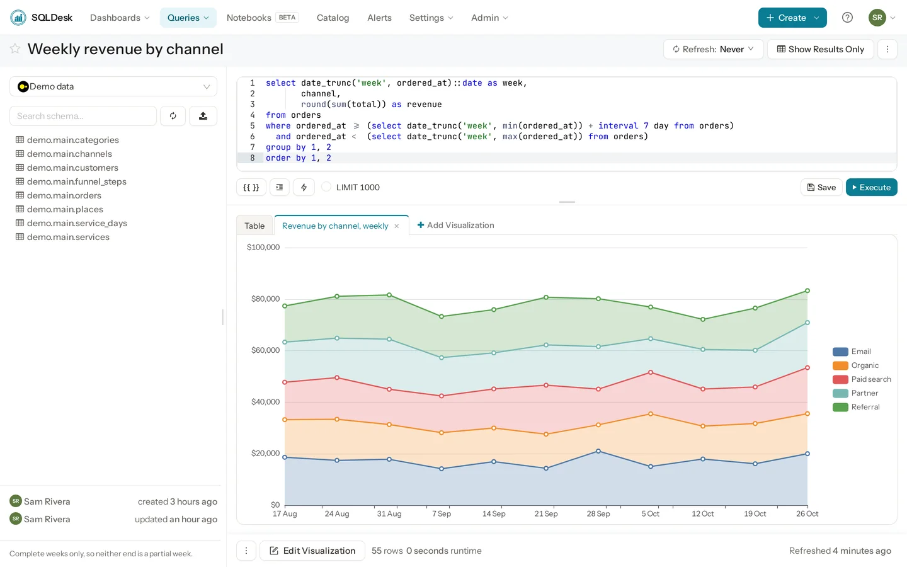
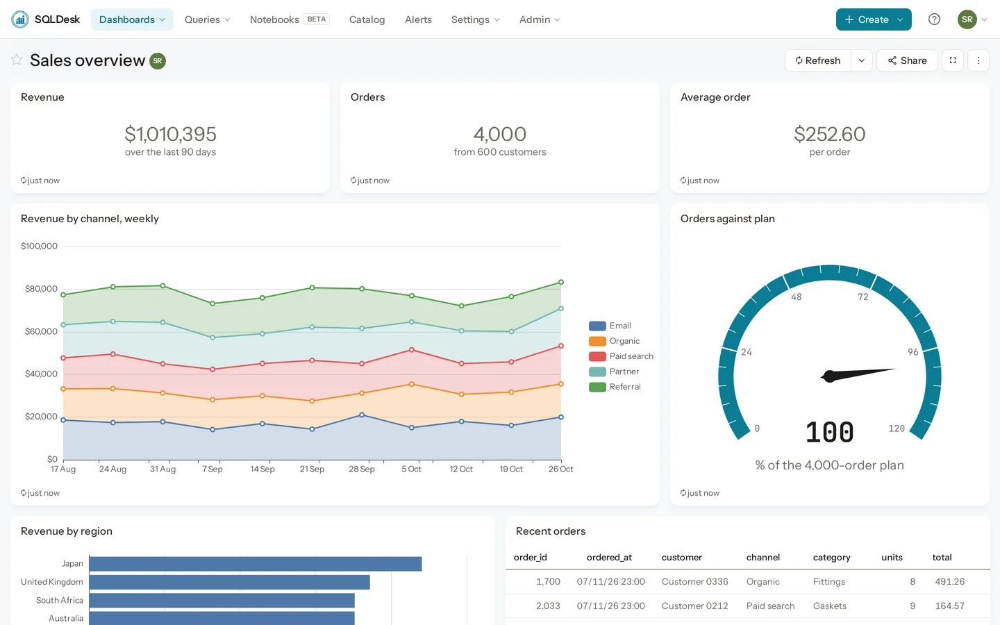
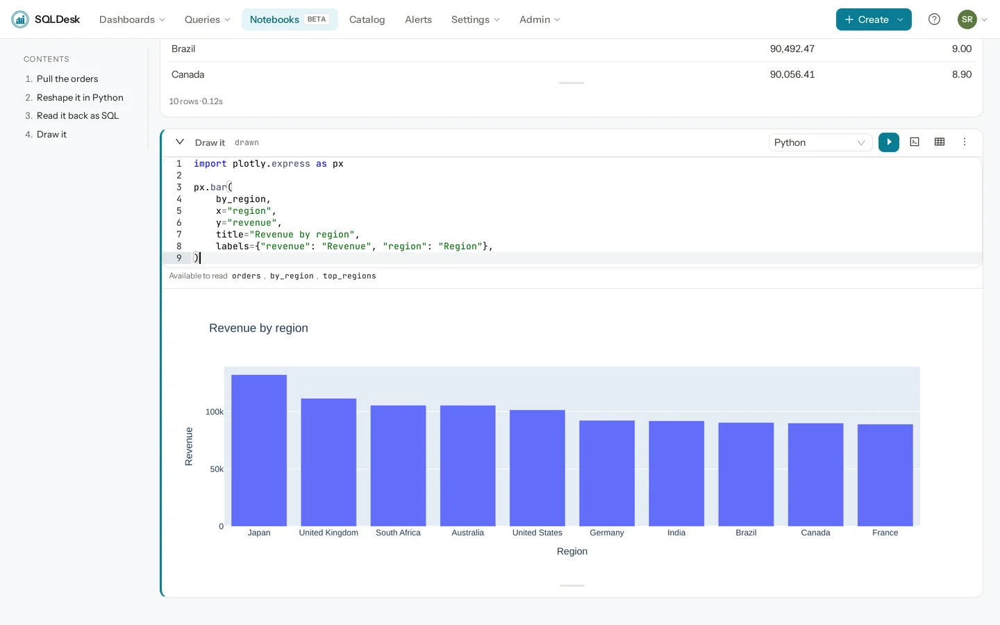
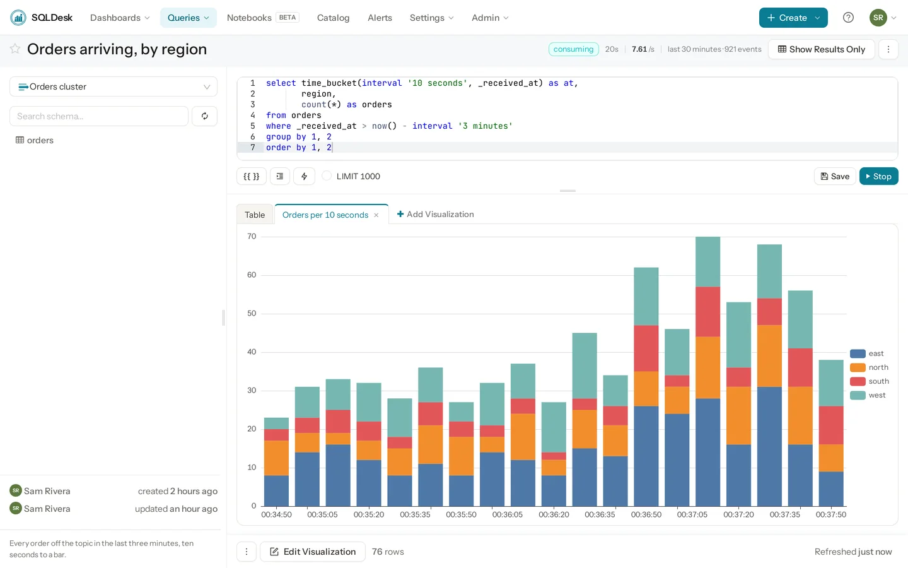

SQL, dashboards, notebooks and alerts over more than 60 data sources — and an MCP server that gives your agent your permissions, not a second set of credentials. Self-hosted and open source. Viewers are free, because there is nobody to charge you for them.
Apache 2.0 · images for amd64 and arm64 · nothing phones home

Every picture on this page is SQLDesk itself, running the demo that manage demo seed builds.
Take the tour
The same data sources, the same permissions and the same result store, whether somebody opens a dashboard, works through a notebook, asks an agent, or watches a topic.
Dashboards
Lay out charts from any number of queries, filter them all at once, and refresh them on the server on a schedule — or every 30 seconds for the one on the wall.

Notebooks · beta
A chain of cells in SQL and Python. Pull from one data source, join it to another, reshape it in pandas and chart it — with the permissions, result store and scheduler you already have.

MCP
Point Claude — or anything else that speaks MCP — at SQLDesk and it sees what you see: the same data sources, row limits and groups. It looks for work your team has already done before it writes anything new.
> which region brings in the most revenue?
find_queries("revenue by region")
#2 Every region, measured four ways
Four measures per region, for finding the one that behaves unlike the rest.
data source: Demo data · updated 2026-11-06
- Revenue by region (column chart; x: region; y: revenue)
…
check_sql(…)
WARNING: No WHERE clause and no LIMIT
WARNING: ORDER BY with no LIMIT
run_query(… limit 3)
region revenue orders
Japan 132212.86 508
United Kingdom 111590.14 443
South Africa 105544.56 423
The server’s own replies against the demo data, cut where marked …
Streams
A cluster is a data source and its topics are its tables. Write SQL against a live window of one, in the same editor, with Execute replaced by Start streaming.

Quick start
A published image, plus the Postgres and Redis it needs. Nothing to build.
# fill in the three secrets it asks for
$ cp .env.example .env
$ docker compose -f compose.prod.yaml run --rm server create_db
$ docker compose -f compose.prod.yaml up -d
→ http://localhost:5000SQLDESK_PORT and
SQLDESK_HOST in .env to another one.SQLDESK_SECRET_KEY encrypts every data source
password; lose it and they are unreadable.charts/sqldesk.
Deploying, in full →What you get
Analysts write SQL. Everyone else gets dashboards, alerts and links that keep working.
Schema browser, autocomplete, formatting, parameters and scheduled refresh. Fork a query, schedule it, publish it.
Drag visualizations into a grid, filter across them at once, and export a one-page report as a PDF or an image.
Trigger on a query result and notify any of 13 destinations, with a picture of the chart if you want one.
Drop in a CSV or Parquet file and query it with SQL immediately, backed by DuckDB. No pipeline required.
28 kinds — tables, pivots, cohorts, funnels, maps, sankeys and more — all configured without code.
Groups, per-data-source access, view-only roles, features an administrator grants, and public links with their own tokens.
Data sources
Each is a small plugin over the vendor’s own driver, so a connection behaves the way
the vendor intended. The count is of products, not ways in: MySQL on RDS or four flavours of
Elasticsearch count once, and files and URLs not at all. manage ds list_types lists every
connector your install has.
* In the amd64 image only: their ODBC drivers are published for x86-64 alone.
Releases
Each release has a single theme, because a release that does a little of everything is one nobody can describe.
Chains of SQL and Python cells over the data sources you already have, six new chart types, and query pools that keep fifty widgets from opening fifty connections.
Topics you can query and chart, dashboard folders with a stated meaning, OAuth 2.1 for MCP clients, and permissions an administrator hands to a group.
An agent that reaches your data with your permissions, and a catalog that tells it what the tables mean. Measures are proposed, never assumed.
The application got out of the way of the charts, and stopped fetching the same result once per widget.
Worth saying plainly
So nobody installs it expecting one of these. Each one is a decision, not an omission — the reasoning is in the releases.
Under the hood
Python 3.13, Flask and SQLAlchemy, with RQ workers running queries, schedules and alerts off the request path. The web server, workers and scheduler are separate processes.
React and TypeScript, built with Webpack. Visualizations live in their own workspace package so charts can be developed and tested independently of the app.
Postgres holds queries, dashboards, users and cached results. Redis handles job queues, locks and schema caching. DuckDB backs file upload, stream windows and the handoff between notebook cells.
Docker Compose for a single box, or the Helm chart in charts/sqldesk for Kubernetes.
Notebook Python runs in a container of its own, off by default. No license server to call.